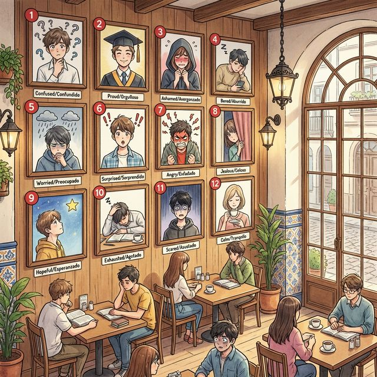

Chapter 2: ¿Cómo soy? (A2)
Cervantes: §2 Persona: 심화된 성격 묘사, 일시적/영구적 상태의 구분 및 형용사의 의미 변화
1. Opener
Más allá de la superficie (표면 그 너머)
A1에서 기본적인 성격과 외모를 배웠다면, A2에서는 더 복잡한 감정 상태와 재귀동사를 활용한 일상적인 심리 변화에 대해 다룹니다. 또한, 같은 형용사라도 Ser와 Estar 중 어느 동사와 결합하느냐에 따라 의미가 어떻게 변하는지 심층적으로 탐구합니다.
학습 목표
- 복합적인 감정 및 심리 상태를 나타내는 고급 형용사 습득
- 재귀동사(Verbos reflexivos)를 활용한 기분과 상태의 변화 표현
- Ser vs Estar 결합에 따른 형용사의 의미 변화(Semantic shifts) 이해
- 스페인 디지털 세대의 자아 표현 방식과 SNS 문화 이해
¿Sabías que...? 스페인어에서 'Listo'라는 단어는 'Ser listo'일 때는 '똑똑하다(Smart)'는 뜻이지만, 'Estar listo'일 때는 '준비가 되었다(Ready)'는 뜻이 됩니다. 동사 하나로 의미가 완전히 달라지는 스페인어의 묘미를 느껴보세요!
2. Vocabulario Esencial
더 섬세한 감정의 결을 표현하기 위한 어휘들입니다.

| # | Spanish | English Bridge | Korean Tip |
|---|---|---|---|
| 1 | confundido / -a | Confused ✅ | '꼰뿐디도' |
| 2 | orgulloso / -a | Proud (Proud of self) | '오르구요소' |
| 3 | avergonzado / -a | — (Ashamed / Embarrassed) | ⚠️ Embarrassed와 소리 비슷 |
| 4 | aburrido / -a | Bored | Ser/Estar 의미 변화 주의 |
| 5 | preocupado / -a | Preoccupied → Worried | 걱정에 사로잡힌 상태 |
| 6 | sorprendido / -a | Surprised ✅ | 놀란 상태 |
| 7 | enfadado / -a | — (Angry / Mad) | '엔파다도' |
| 8 | celoso / -a | Jealous ✅ | 질투하는 |
| 9 | esperanzado / -a | Hope (Esperanza) → Hopeful | 희망에 가득 찬 |
| 10 | agotado / -a | Exhausted | 에너지가 고갈(ex-haust)된 |
| 11 | asustado / -a | — (Scared / Frightened) | 겁먹은 상태 |
| 12 | tranquilo / -a | Tranquil ✅ | 차분하고 평온한 |
✅ 항목은 영어와 거의 동일하거나 어원이 같아 기억하기 쉬운 어휘입니다.
3. Expresiones Útiles
감정의 변화와 심화된 묘사를 위한 표현들입니다.
| Spanish | English Mapping | Korean Translation |
|---|---|---|
| Me siento un poco confundido. | I feel a bit confused. | 조금 혼란스러워요. |
| ¡No te preocupes! | Don't worry! | 걱정하지 마세요! |
| Estoy orgulloso de ti. | I am proud of you. | 네가 자랑스러워. |
| Me pongo nervioso antes de un examen. | I get nervous before an exam. | 나는 시험 전에 긴장하게 돼. |
| ¿Estás enfadado conmigo? | Are you mad at me? | 나한테 화났니? |
| Él es muy listo. | He is very smart. | 그는 정말 똑똑해. |
| ¿Estás listo para salir? | Are you ready to go out? | 나갈 준비 됐니? |
4. Gramática Esencial
1. 동사 결합에 따른 의미 변화 (Ser vs. Estar)
어떤 형용사는 Ser와 Estar 중 무엇과 쓰이느냐에 따라 뜻이 완전히 바뀝니다. 이는 A2 레벨의 핵심 역량입니다.
| 형용사 | Ser (본질/성격) | Estar (상태) |
|---|---|---|
| listo / -a | 똑똑하다 (Smart) | 준비되다 (Ready) |
| malo / -a | 나쁘다 (Bad character) | 아프다 (Sick) / 맛없다 (Bad taste) |
| aburrido / -a | 지루한 사람 (Boring) | 지루함을 느끼다 (Bored) |
| verde | 초록색이다 | 미숙하다 (Not ripe) |
| rico / -a | 부자다 (Rich) | 맛있다 (Delicious) |
2. 재귀동사 (Verbos Reflexivos): 기분의 변화
주어의 행동이 다시 주어 자신에게 돌아오는 재귀동사는 '기분이나 상태의 변화'를 나타낼 때 자주 쓰입니다.
재귀대명사: me, te, se, nos, os, se
| 주어 | Sentirse (느끼다) | Ponerse (~이 되다-상태변화) |
|---|---|---|
| yo | me siento | me pongo |
| tú | te sientes | te pones |
| él / ella / usted | se siente | se pone |
| nosotros / nosotras | nos sentimos | nos ponemos |
| vosotros / vosotras | os sentís | os ponéis |
| ellos / ellas / ustedes | se sienten | se ponen |
Korean Tip: '나는 슬퍼(Estoy triste)'는 현재의 상태지만, '나는 슬퍼져(Me pongo triste)'는 감정의 변화 과정을 강조합니다. 재귀동사는 이 '변화'의 느낌을 잘 살려줍니다.
5. Cultura Viva: El "Yo" digital en España 📱
스페인 청년들의 SNS와 자아 표현 문화를 살펴봅니다.
La imagen personal en la era de Instagram
Hoy en día, para los jóvenes españoles (la "Generación Z"), la identidad no solo se construye en la vida real, sino también en el mundo digital. Redes sociales como Instagram y TikTok son espacios fundamentales para mostrar quiénes son y cómo se sienten. En España, existe una fuerte cultura visual; a la gente le gusta compartir fotos de sus viajes, de la comida ("comida instagrameable") y de sus momentos de ocio con amigos.
Sin embargo, esto también genera una presión por mostrar una "vida perfecta". Muchos jóvenes se sienten preocupados o estresados por su imagen pública. A pesar de esto, el carácter español sigue siendo muy expresivo y abierto. Es común ver perfiles con mensajes positivos y directos. La palabra "postureo" es muy famosa en España: se usa para describir cuando alguien hace algo solo para lucirse en las redes sociales, aunque no sea su realidad cotidiana.
한국어 번역
오늘날 스페인 청년들(Z세대)에게 정체성은 현실 세계뿐만 아니라 디지털 세계에서도 구축됩니다. 인스타그램이나 틱톡 같은 소셜 미디어는 그들이 누구인지, 그리고 어떻게 느끼는지를 보여주는 핵심적인 공간입니다. 스페인에는 강력한 시각 문화가 존재합니다. 사람들은 여행, 음식("인스타 감성 음식"), 그리고 친구들과의 여가 시간을 공유하는 것을 좋아합니다.
하지만 이는 또한 "완벽한 삶"을 보여줘야 한다는 압박감을 생성하기도 합니다. 많은 청년이 자신의 공적인 이미지에 대해 걱정하거나(preocupados) 스트레스를(estresados) 받기도 합니다. 그럼에도 불구하고, 스페인 사람들의 성격은 여전히 매우 표현력이 풍부하고 개방적입니다. 긍정적이고 직설적인 메시지가 담긴 프로필을 흔히 볼 수 있습니다. 스페인에서 "postureo(포스투레오)"라는 단어는 매우 유명한데, 이는 누군가가 실제 현실이 아님에도 오직 소셜 미디어에 뽐내기 위해 행동하는 것을 묘사할 때 사용됩니다.

6. Práctica
A. ¿Ser o Estar? (문맥에 맞는 동사를 선택하세요)
- Carlos es (listo / preocupado). Siempre saca buenas notas.
- La manzana está (verde / rica). No podemos comerla todavía.
- No quiero ver esa película, es muy (aburrida / confundida).
- El café está (malo / rico) hoy. ¡Me encanta!
- Estoy (listo / verde) para el viaje. Tengo mi maleta.
B. Completa con el verbo reflexivo (재귀동사를 알맞게 변화시키세요)
- Yo (sentirse) ............................ muy bien hoy.
- Cuando llueve, Lucía (ponerse) ............................ triste.
- ¿Por qué (tú / sentirse) ............................ confundido?
- Nosotros (ponerse) ............................ nerviosos en los exámenes.
- Los niños (asustarse) ............................ con la tormenta.
C. 번역 연습 (스페인어로 옮겨보세요)
- 나는 우리 가족이 자랑스러워(orgulloso).
........................................................................................... - 시험 때문에 걱정하지 마!
........................................................................................... - 그는 학교에서 가장 똑똑한 학생이야.
........................................................................................... - 너는 오늘 왜 그렇게 화가 났니?
........................................................................................... - 우리는 새로운 소식에 깜짝 놀랐어(sorprendidos).
...........................................................................................
7. Lectura 📖
Un día de muchas emociones
Ayer fue un día muy intenso para Manuel. Por la mañana, se sintió muy orgulloso porque terminó un proyecto importante en su trabajo. Pero al mediodía, se puso preocupado porque no encontraba las llaves de su coche. Después de buscarlas por una hora, estaba agotado. Al final, su novia las encontró y Manuel se sintió tranquilo otra vez. ¡Qué día tan loco!
Questions
1. Manuel은 왜 아침에 자신을 자랑스럽게 느꼈나요?
2. 점심 무렵에 그는 왜 걱정하고 지쳤나요?
3. 결국 누가 열쇠를 찾았고, Manuel의 기분은 어떻게 변했나요?
한국어 번역
많은 감정이 교차한 하루
어제는 마누엘에게 매우 강렬한 하루였습니다. 아침에 그는 직장에서 중요한 프로젝트를 끝냈기 때문에 매우 자랑스러움을(orgulloso) 느꼈습니다. 하지만 정오쯤, 차 열쇠를 찾을 수 없어서 걱정이(preocupado) 되었습니다. 한 시간 동안 열쇠를 찾은 후, 그는 녹초가(agotado) 되었습니다. 결국, 그의 여자친구가 열쇠를 찾았고 마누엘은 다시 안도감을(tranquilo) 느꼈습니다. 정말 미친 하루였어요!
8. Diálogo
¡No te pongas nervioso! (긴장하지 마!)
Situación: Javier tiene una entrevista de trabajo por primera vez. Su hermana Elena intenta tranquilizarlo porque Javier está muy estresado y preocupado por su imagen.
상황: 하비에르는 처음으로 구직 면접을 앞두고 있습니다. 그의 누나 엘레나는 하비에르가 자신의 이미지 때문에 매우 스트레스를 받고 걱정하고 있는 것을 보고 그를 안심시키려 노력합니다.
| Speaker | Spanish | Korean |
|---|---|---|
| Javier | Elena, me pongo muy nervioso. | 엘레나, 나 너무 긴장돼. |
| Elena | ¡Tranquilo, Javier! Eres una persona muy lista. | 진정해, 하비에르! 넌 정말 똑똑한 사람이잖아. |
| Javier | Pero hoy no me siento seguro. Estoy confundido. | 하지만 오늘은 자신감이 안 생겨. 혼란스러워. |
| Elena | Es normal estar asustado la primera vez. | 처음에는 겁나는 게 당연해. |
| Javier | ¿Cómo me veo? ¿Estoy bien con esta camisa? | 나 어때 보여? 이 셔츠 괜찮아? |
| Elena | Estás muy guapo y serio. ¡Perfecto para el trabajo! | 아주 잘 생겨 보이고 진중해 보여. 일하기에 완벽해! |
| Javier | Gracias. Ahora me siento un poco más esperanzado. | 고마워. 이제 조금 더 희망이 생기는 것 같아. |
| Elena | ¡Mucha suerte! Estamos orgullosos de ti. | 행운을 빌어! 우린 네가 자랑스러워. |
9. Repaso
이 장에서 배운 내용을 확인해 보세요:
- [ ] 감정과 심리 상태를 나타내는 심화 형용사 12개를 익혔다.
- [ ] Ser와 Estar 결합에 따라 뜻이 변하는 형용사(listo, rico 등)를 구분한다.
- [ ] 재귀동사(sentirse, ponerse)를 사용하여 상태의 변화를 표현할 수 있다.
- [ ] 스페인 청년들의 SNS 문화와 'postureo'의 의미를 이해했다.
10. Cierre
¡Excelente! 이제 여러분은 단순한 외모 묘사를 넘어, 사람의 깊은 내면과 감정의 변화까지 스페인어로 풍부하게 표현할 수 있게 되었습니다.
A2 수준에서 중요한 것은 '뉘앙스'의 차이를 아는 것입니다.
다음 장에서는 우리의 '정체성'과 이를 증명하는 '서류(Identidad/DNI)'에 대해 배우며 실무적인 스페인어 능력을 키워보겠습니다. ¡Ánimo!
11. Soluciones
A. ¿Ser o Estar?
1. listo / 2. verde / 3. aburrida / 4. rico / 5. listo
B. Completa con el verbo reflexivo
1. me siento / 2. se pone / 3. te sientes / 4. nos ponemos / 5. se asustan
C. 번역 연습
1. Estoy orgulloso de mi familia.
2. ¡No te preocupes por el examen!
3. Él es el estudiante más listo de la escuela.
4. ¿Por qué estás tan enfadado hoje?
5. Estamos sorprendidos por las nuevas noticias.